Every diamond counts. Every stamina matters. A complete long-term resource planning framework for zero-spenders and low-spenders.
Before planning pulls, you need an honest assessment of how many diamonds you actually earn per month. Many players overestimate income and end up disappointed. Below is a realistic, evidence-based breakdown for both pure F2P and monthly card players.
| Source | Daily/Weekly | Monthly F2P | Monthly (Monthly Card) |
|---|---|---|---|
| Daily Missions | 40 diamonds/day | 1,200 | 1,200 |
| Weekly Missions | 150 diamonds/week | 600 | 600 |
| Monthly Card (Daily) | 100 diamonds/day | 0 | 3,000 |
| Monthly Card (Instant) | 300 upfront | 0 | 300 |
| Hunter Contest (Floor 10 avg) | 120/week | 480 | 480 |
| Event Average (monthly) | varies | 800-1,200 | 800-1,200 |
| Maintenance/Compensation | 100-200/month | 150 | 150 |
| Total (Low Estimate) | ~3,200 diamonds | ~6,500 diamonds | |
| Total (High Estimate w/ events) | ~4,000 diamonds | ~7,500 diamonds |
One guaranteed 5-star character (soft pity at 66 pulls, hard pity at 80) costs 12,000-14,400 diamonds (if starting from zero pity). This means:
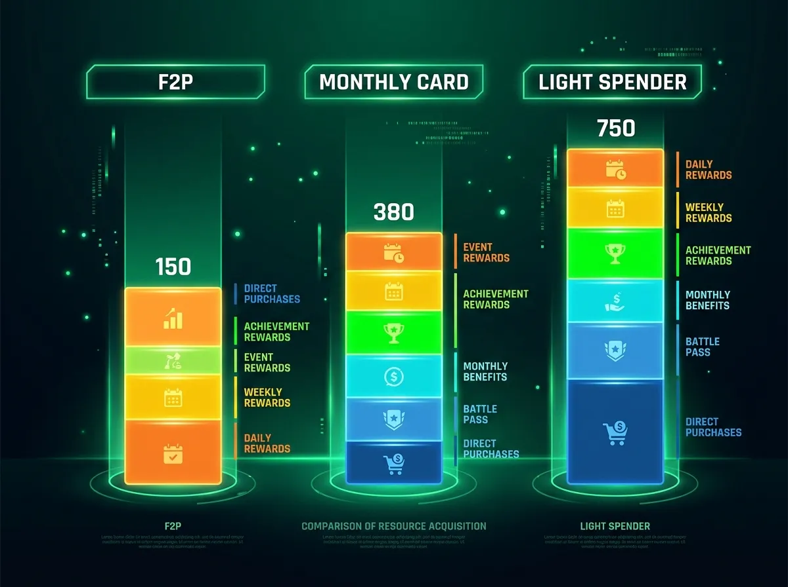
Figure 1: Visual comparison of monthly diamond income — F2P vs Monthly Card vs Light Spender.
Image description: Three vertical bar charts (F2P ~3,500 diamonds, Monthly Card ~6,800 diamonds, Light Spender ~10,000 diamonds), each bar divided into color-coded income sources.
With limited diamonds, every pull decision must be intentional. Here is a priority-based decision framework for banner evaluation.
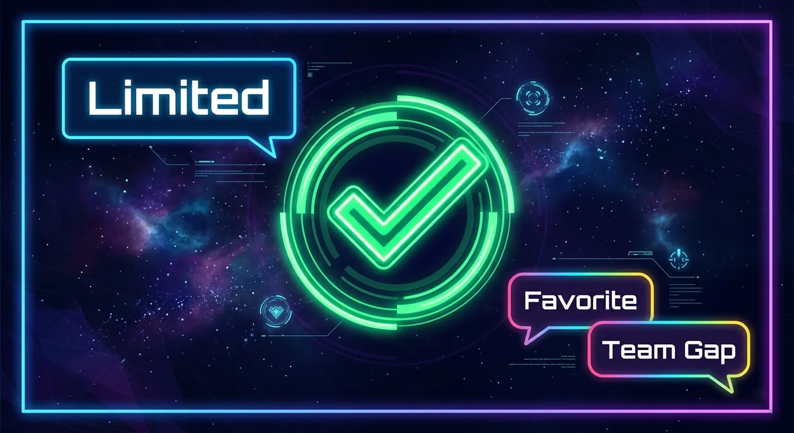
Limited character that fills a gap in your main team. Your absolute favorite character (if you care about emotional attachment). Limited banners that won't enter standard pool.
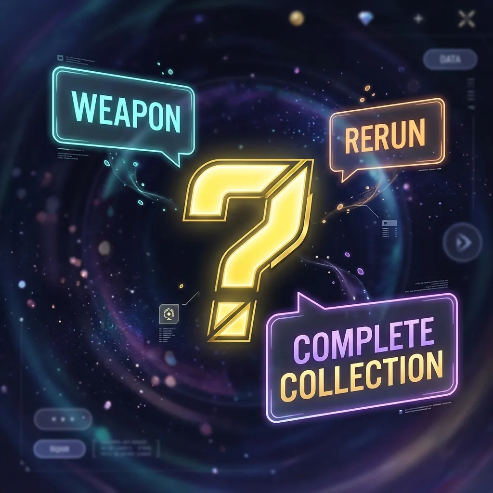
Strong weapon/Protocore banners. Standard banner characters you don't have but want. Rerun banners if you missed the first run.
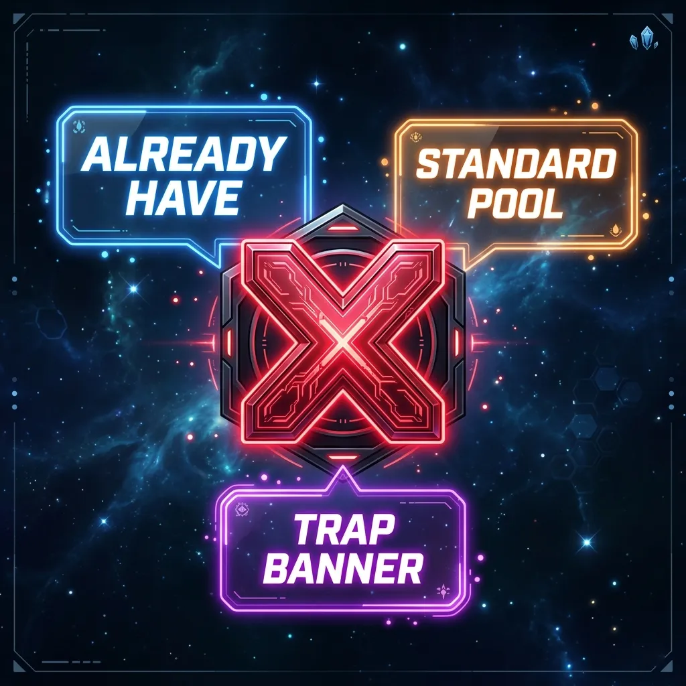
Banners where you already have the featured character. Permanent weapon banners (weapons enter standard pool eventually). "Trap" banners with low-value rate-ups.
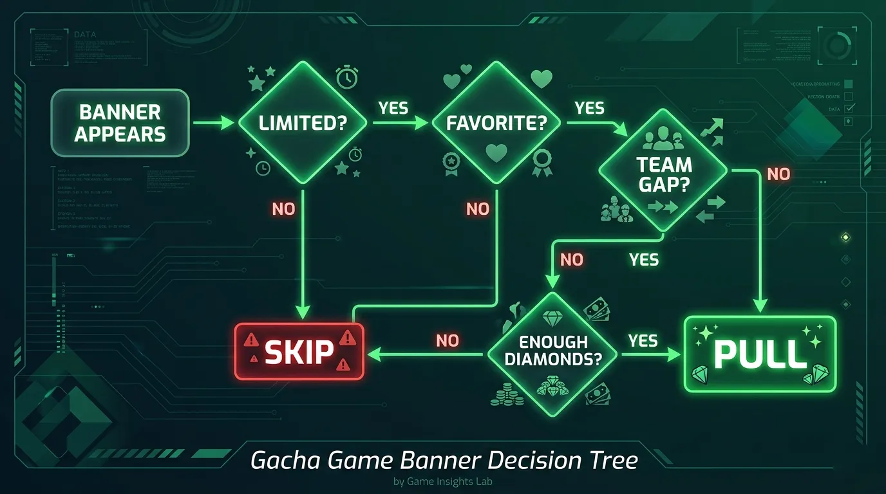
Figure 2: Decision tree for banner pulls — from "Is this character limited?" to "Do you have enough for pity?"
Image description: Flowchart starting with banner appearance, branching through questions (limited? favorite? team gap? enough diamonds?) leading to "Pull" or "Skip" outcomes.
Stamina (energy) is your most limited daily resource. Spending it inefficiently is the #1 mistake that delays account progress. Below is a stamina efficiency ranking based on long-term value.
| Activity | Stamina Cost | Value Rating | Reason |
|---|---|---|---|
| Skill Material Dungeon (highest tier) | 30 per run | ★★★★★ | Skills are permanent power. No RNG. Direct character strength. |
| Protocore Dungeon (main stat farming) | 40 per run | ★★★★☆ | High RNG, but essential for endgame. Farm only after skills are level 6+. |
| Boss Material (ascension) | 30 per run | ★★★★☆ | Required for level caps. Farm only when you have a character ready to ascend. |
| Gold Dungeon | 20 per run | ★★★☆☆}\)_Always needed, but events provide gold. Don't over-farm. | |
| Character EXP Dungeon | 20 per run | ★★★☆☆)_Same as gold — needed, but events are better sources. | |
| Wanderer Domain (equipment) | 25 per run | ★★☆☆☆)_Low drop rates for good pieces. Better to get from events. |
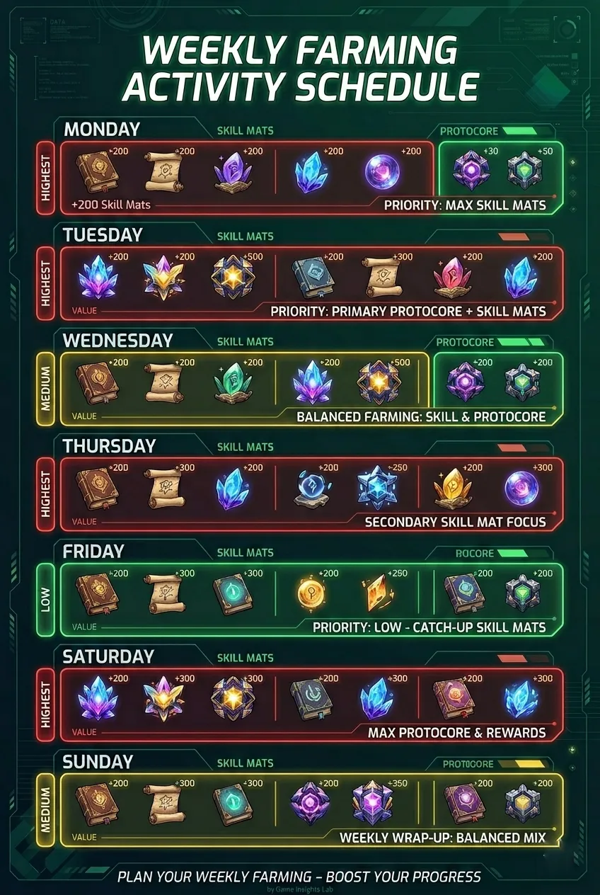
Figure 3: Daily stamina routine cheat sheet — what to farm each day of the week.
Image description: Vertical infographic showing a week schedule: Mon (Skill), Tue (Skill + Ascension), Wed (Skill + Protocore), etc., with color-coded priority boxes.
For F2P and monthly card players, you cannot build all four male leads equally. You must choose 1-2 main characters to focus on. Here is a data-driven priority ranking based on versatility and F2P-friendliness.
Getting one character to level 80 with level 8 skills is more valuable than having three characters at level 60. Focus fire your resources.
Target milestones: Level 70 → Level 80 → Skill 6 → Skill 8 → Protocore main stats → Skill 10.
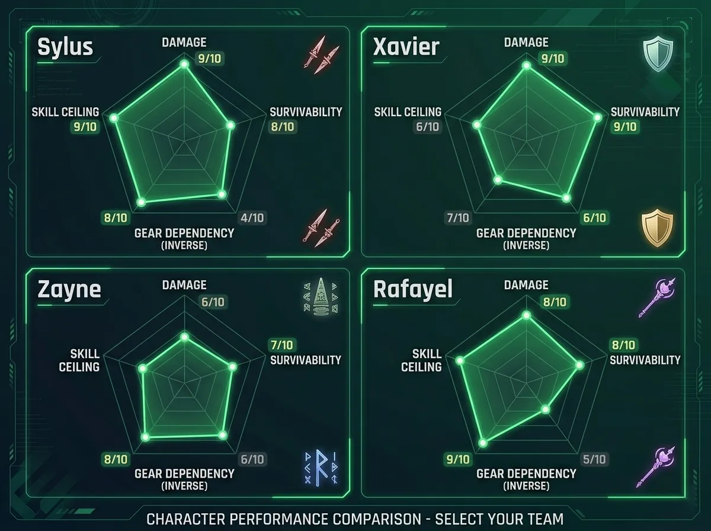
Figure 4: Radar chart comparing the four characters across F2P-friendly metrics: DPS, Survivability, Gear Dependence, Skill Ceiling.
Image description: Four overlapping radar charts (one per character) with axes: Damage Output, Survivability, Gear Dependency (inverse), Skill Floor. Sylus has highest in Survivability and lowest Dependency.
Set realistic expectations. Here is a timeline-based roadmap for F2P and monthly card players.
| Timeframe | F2P Goals | Monthly Card Goals |
|---|---|---|
| Month 1-3 | Reach level 70 on main DPS. Skill level 6. Farm protocores with correct main stats. Save 1 full pity worth of diamonds. | Reach level 80 on main DPS. Skill level 8. Farm decent protocores. Secure 1 limited character. |
| Month 4-6 | Level 80 main DPS, skill 8. Start second character to 60. Save for second pity. | Level 80 on 2 characters. Skill 8-10. Secure 2 limited characters (or 1 with weapon). |
| Month 7-12 | Second character to 80. Start protocore substat optimization. Occasional limited banner pulls. | Full team of 3 at level 80. Skill 10 on mains. Can clear all content comfortably. |
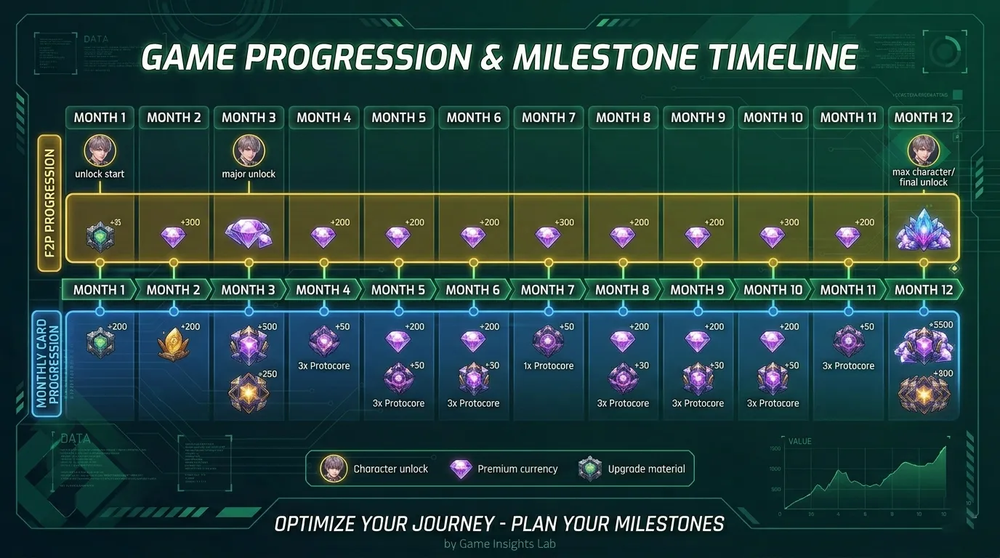
Figure 5: 12-month progression roadmap — monthly milestones, diamond savings targets, and expected power levels.
Image description: Horizontal timeline from Month 1 to 12, each month has a milestone icon (character portrait, diamond icon, protocore icon), colored bands for F2P (gold) and Monthly Card (blue).
The biggest enemies of F2P players are not the game's difficulty — they are psychological traps. Here are the most dangerous ones and how to avoid them.
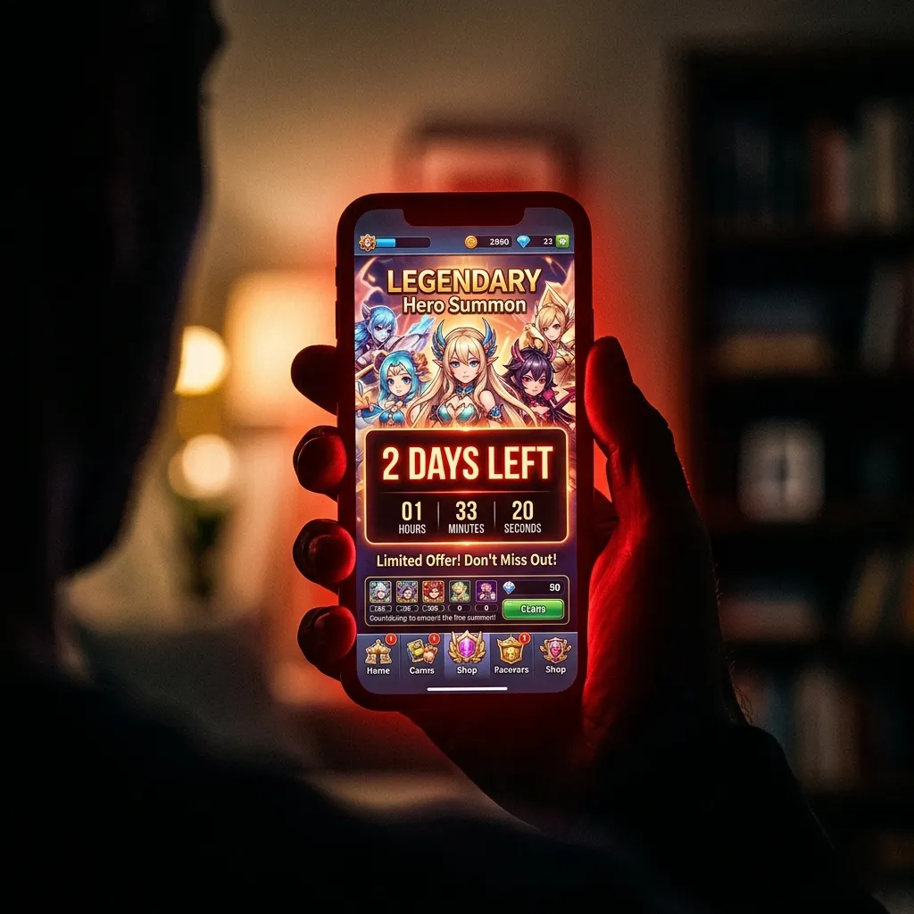
The trap: "I need to pull now or I'll never get this character again." The truth: Limited banners return (usually in 6-8 months). Save for your absolute favorite.
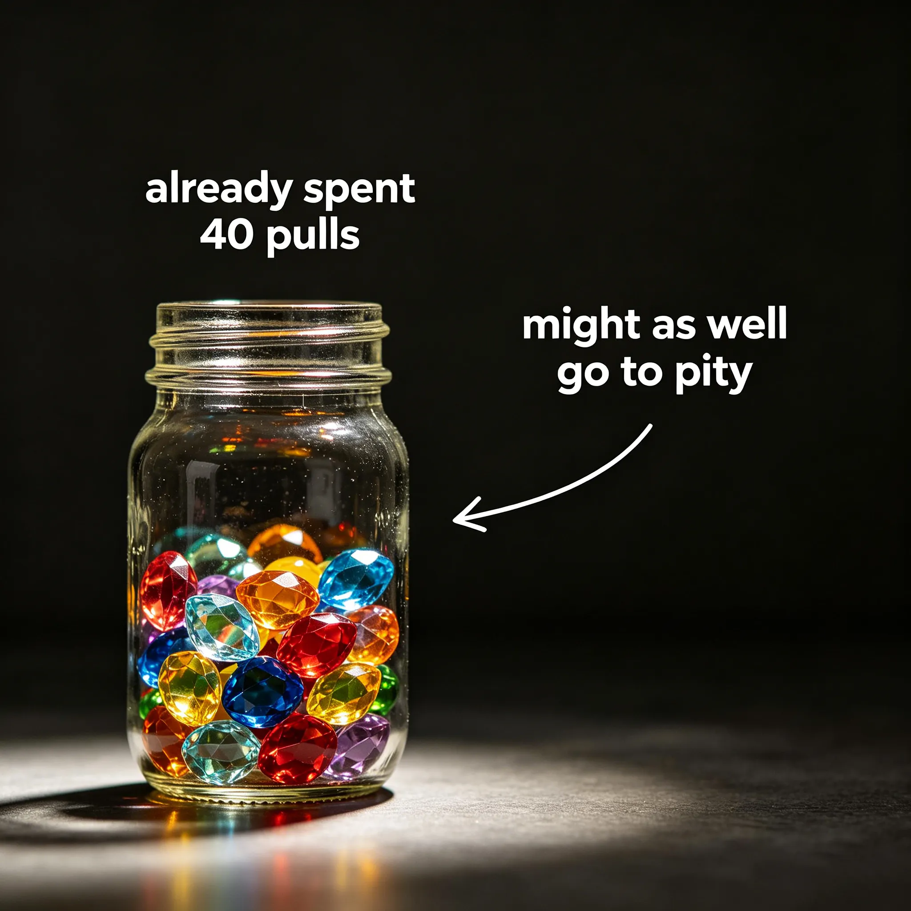
The trap: "I've already spent 40 pulls, might as well go to pity." The truth: Those 40 pulls are gone regardless. Don't spend more just because you spent already.
The trap: "Whales on Reddit have full rosters. I'm behind." The truth: You're playing a different game. Compare only to your past self, not to spenders.
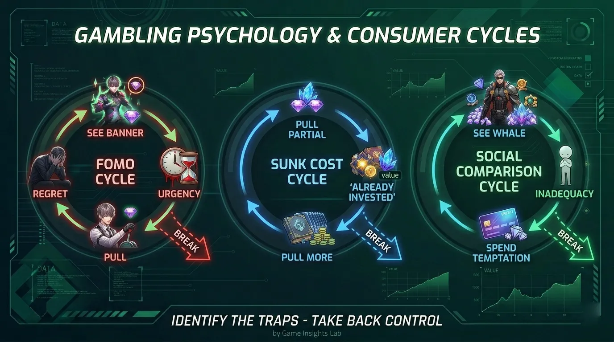
Figure 6: The three psychological traps — FOMO, Sunk Cost, Social Comparison — and how to break each cycle.
Image description: Three cycle diagrams: FOMO (See banner → Feel urgency → Pull → Regret → Repeat), Sunk Cost (Pull partial → "Already invested" → Pull more), Social Comparison (See whale account → Feel inadequate → Temptation to spend). Each with a "Break" arrow.
The most important resource in Love and Deepspace is not diamonds or stamina — it's patience. F2P and monthly card players cannot have everything immediately. But with smart planning, consistent daily play, and resistance to psychological traps, you can build a powerful account, clear all content, and secure the characters you truly love.
Remember: the game is a marathon, not a sprint. Every diamond saved today is a limited character secured tomorrow.